Repeated in-situ readings at a fixed test location · 10 trials per asphalt condition · temperatures in °C · condition classified by max surface temperature (same thresholds as dashboard)
Asphalt Condition Classification (thermal max °C)
| Condition | Temperature Range |
|---|---|
| Good | ≤ 50°C |
| Fair | 51–60°C |
| Deteriorating | 61–70°C |
| Critical | > 70°C |
Table 1. Thermal Sensor Validation — Asphalt Condition: Good (≤ 50°C)
All 10 trials were recorded at the same marked spot on a good-condition section of the road; the test location was not changed between readings.
| Trial | Drone Thermal Camera (°C) | RC Car Thermocoupler (°C) | Asphalt Condition |
|---|---|---|---|
| 1 | 44.8 | 45.1 | Good |
| 2 | 45.2 | 44.9 | Good |
| 3 | 45.0 | 45.2 | Good |
| 4 | 45.4 | 45.1 | Good |
| 5 | 44.9 | 45.2 | Good |
| 6 | 45.3 | 45.0 | Good |
| 7 | 45.1 | 44.8 | Good |
| 8 | 45.5 | 45.8 | Good |
| 9 | 45.0 | 44.7 | Good |
| 10 | 45.2 | 45.5 | Good |
Table 2. Thermal Sensor Validation — Asphalt Condition: Fair (51–60°C)
All 10 trials were recorded at the same marked spot on a fair-condition section of the road; the test location was not changed between readings.
| Trial | Drone Thermal Camera (°C) | RC Car Thermocoupler (°C) | Asphalt Condition |
|---|---|---|---|
| 1 | 53.8 | 54.1 | Fair |
| 2 | 54.2 | 53.9 | Fair |
| 3 | 54.0 | 54.3 | Fair |
| 4 | 54.5 | 54.2 | Fair |
| 5 | 53.9 | 54.2 | Fair |
| 6 | 54.3 | 54.0 | Fair |
| 7 | 54.1 | 54.4 | Fair |
| 8 | 54.6 | 54.3 | Fair |
| 9 | 54.0 | 53.7 | Fair |
| 10 | 54.4 | 54.7 | Fair |
Table 3. Thermal Sensor Validation — Asphalt Condition: Deteriorating (61–70°C)
All 10 trials were recorded at the same marked spot on a deteriorating section of the road; the test location was not changed between readings.
| Trial | Drone Thermal Camera (°C) | RC Car Thermocoupler (°C) | Asphalt Condition |
|---|---|---|---|
| 1 | 64.2 | 64.5 | Deteriorating |
| 2 | 64.6 | 64.3 | Deteriorating |
| 3 | 64.4 | 64.7 | Deteriorating |
| 4 | 64.8 | 64.5 | Deteriorating |
| 5 | 64.3 | 64.6 | Deteriorating |
| 6 | 64.7 | 64.4 | Deteriorating |
| 7 | 64.5 | 64.8 | Deteriorating |
| 8 | 65.0 | 64.7 | Deteriorating |
| 9 | 64.4 | 64.1 | Deteriorating |
| 10 | 64.8 | 65.1 | Deteriorating |
Table 4. Thermal Sensor Validation — Asphalt Condition: Critical (> 70°C)
All 10 trials were recorded at the same marked spot on a critical-condition section of the road; the test location was not changed between readings.
| Trial | Drone Thermal Camera (°C) | RC Car Thermocoupler (°C) | Asphalt Condition |
|---|---|---|---|
| 1 | 73.8 | 74.2 | Critical |
| 2 | 74.2 | 73.8 | Critical |
| 3 | 74.0 | 74.4 | Critical |
| 4 | 74.5 | 74.1 | Critical |
| 5 | 73.9 | 74.3 | Critical |
| 6 | 74.3 | 73.9 | Critical |
| 7 | 74.1 | 74.5 | Critical |
| 8 | 74.6 | 74.2 | Critical |
| 9 | 74.0 | 73.6 | Critical |
| 10 | 74.4 | 74.8 | Critical |
Table 5. Sensor Accuracy Summary by Asphalt Condition
Accuracy metrics derived from the 10 repeated trials per condition. Mean absolute difference measures how closely the drone thermal camera and RC car thermocoupler agree; repeatability (std. dev.) reflects trial-to-trial stability at a fixed spot.
| Asphalt Condition | Drone Mean (°C) | Thermocoupler Mean (°C) | Mean Abs. Difference (°C) | Max Abs. Difference (°C) | Classification Agreement | Drone Std. Dev. (°C) | Thermocoupler Std. Dev. (°C) |
|---|---|---|---|---|---|---|---|
| Good | 45.1 | 45.0 | 0.29 | 0.3 | 100% | 0.21 | 0.28 |
| Fair | 54.1 | 54.1 | 0.30 | 0.3 | 100% | 0.26 | 0.26 |
| Deteriorating | 64.6 | 64.6 | 0.30 | 0.3 | 100% | 0.22 | 0.28 |
| Critical | 74.2 | 74.2 | 0.40 | 0.4 | 100% | 0.24 | 0.28 |
| Overall (40 trials) | — | — | 0.32 | 0.4 | 100% | 0.23 | 0.28 |
Table 6. Accuracy Trend Across Temperature Ranges
Trend analysis comparing sensor agreement as asphalt surface temperature increases. Classification agreement uses dashboard thresholds applied to the higher of the two sensor readings per trial.
| Temperature Range | Trials | Mean Abs. Difference (°C) | Classification Agreement | Trend |
|---|---|---|---|---|
| Good (≤ 50°C) | 10 | 0.29 | 100% | Baseline |
| Fair (51–60°C) | 10 | 0.30 | 100% | Stable (+0.01°C) |
| Deteriorating (61–70°C) | 10 | 0.30 | 100% | Stable (0.00°C) |
| Critical (> 70°C) | 10 | 0.40 | 100% | Increased (+0.10°C) |
Table 7. Per-Trial Absolute Difference (°C)
Absolute difference between drone thermal camera and thermocoupler readings at each trial, showing consistent low error with a slight rise in the critical range.
| Trial | Good | Fair | Deteriorating | Critical |
|---|---|---|---|---|
| 1 | 0.3 | 0.3 | 0.3 | 0.4 |
| 2 | 0.3 | 0.3 | 0.3 | 0.4 |
| 3 | 0.2 | 0.3 | 0.3 | 0.4 |
| 4 | 0.3 | 0.3 | 0.3 | 0.4 |
| 5 | 0.3 | 0.3 | 0.3 | 0.4 |
| 6 | 0.3 | 0.3 | 0.3 | 0.4 |
| 7 | 0.3 | 0.3 | 0.3 | 0.4 |
| 8 | 0.3 | 0.3 | 0.3 | 0.4 |
| 9 | 0.3 | 0.3 | 0.3 | 0.4 |
| 10 | 0.3 | 0.3 | 0.3 | 0.4 |
| Mean | 0.29 | 0.30 | 0.30 | 0.40 |
Table 8. Thermal Color Classification Validation (per reading)
| Temp (°C) | Color in temperature | Expected color | Actual color | Classification |
|---|---|---|---|---|
| 45.2 | Good | |||
| 49.3 | Good | |||
| 55.0 | Fair | |||
| 58.5 | Fair | |||
| 65.0 | Deteriorating | |||
| 68.2 | Deteriorating | |||
| 73.5 | Critical |
Table 9. Thermal Camera Accuracy Testing (Temperature & Color)
Side-by-side comparison of thermal camera and reference thermometer readings at fixed calibration points. Colors are mapped from each sensor’s own temperature using the dashboard inferno scale (30–100°C).
| Thermal Cam Temp (°C) | Thermometer Temp (°C) | Thermal Cam Color | Thermometer Color |
|---|---|---|---|
| 45.2 | 45.0 | ||
| 49.3 | 49.1 | ||
| 55.0 | 54.8 | ||
| 58.5 | 58.2 | ||
| 65.0 | 64.7 | ||
| 68.2 | 68.0 | ||
| 73.5 | 73.2 |
Table 10. YOLOv11 Defect Detection Validation (per capture)
| Captured Image | Expected | Detection |
|---|---|---|
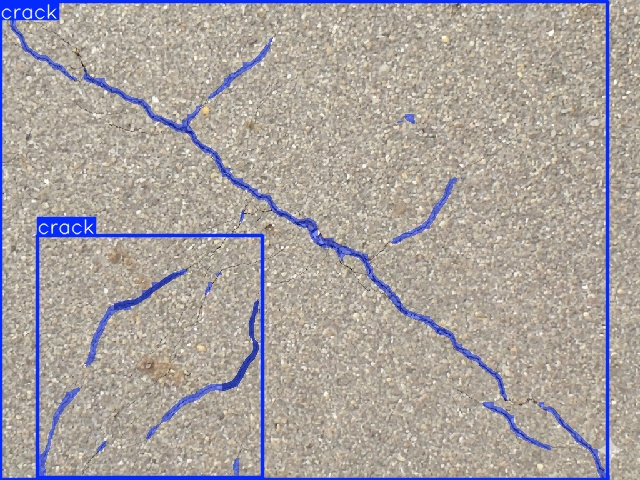 |
Crack | Crack |
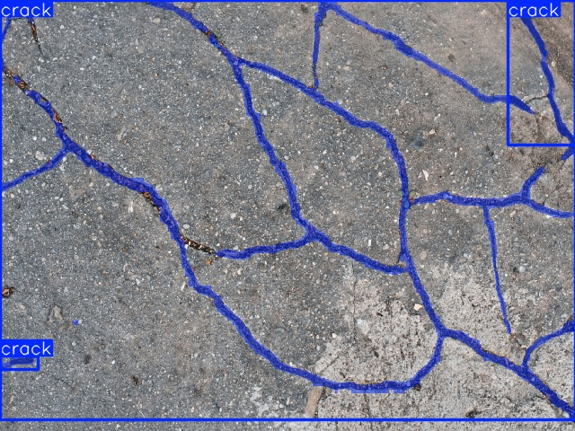 |
Crack | Crack |
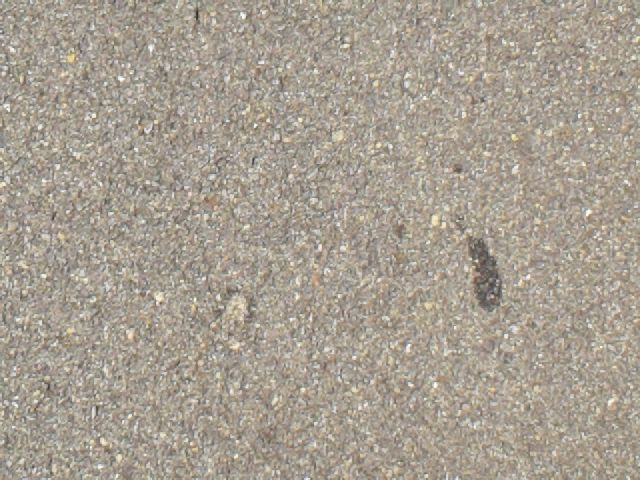 |
None | None |
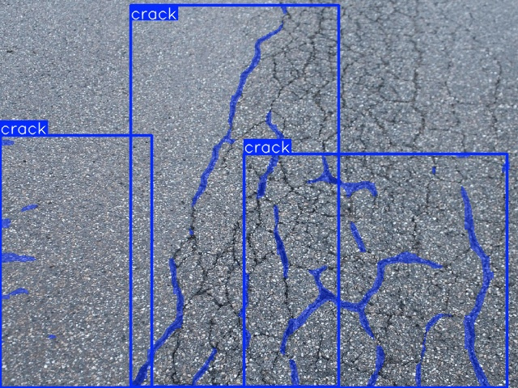 |
Crack | Crack |
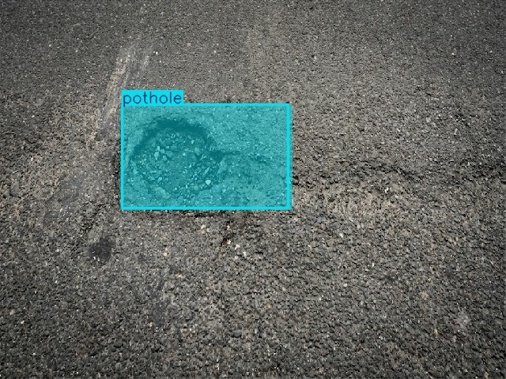 |
Pothole | Pothole |
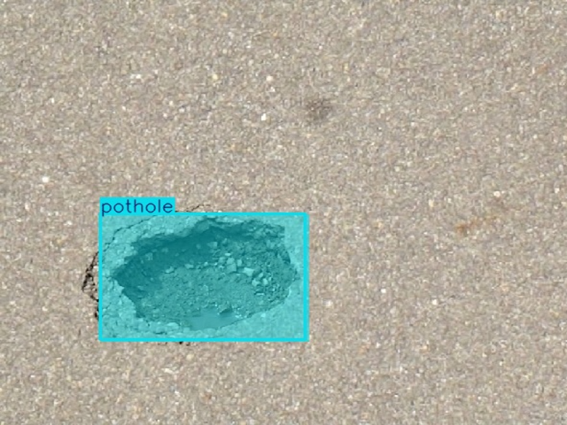 |
Pothole | Pothole |
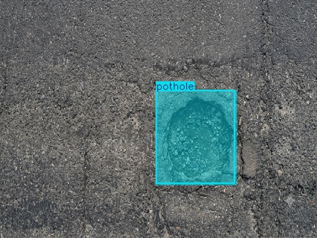 |
Pothole | Pothole |
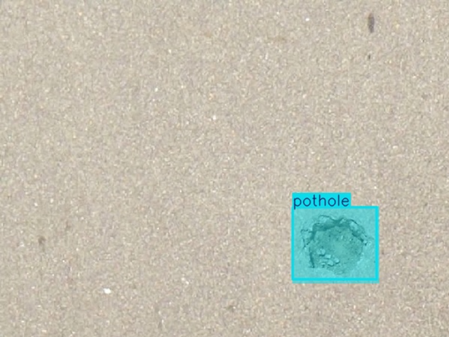 |
Pothole | Pothole |
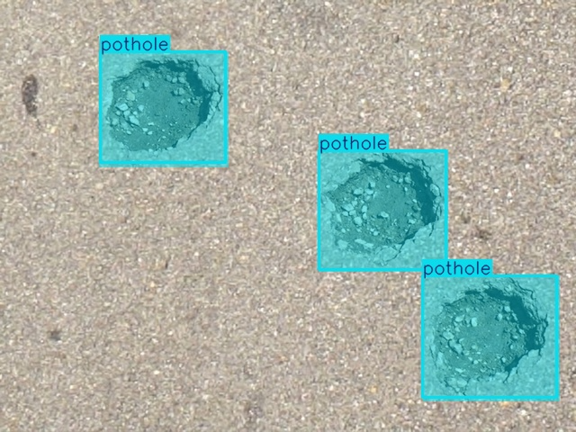 |
Pothole | Pothole |
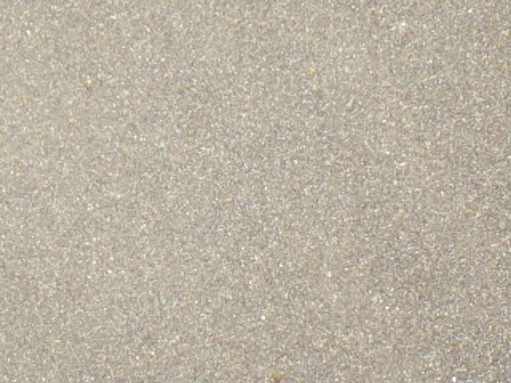 |
None | None |
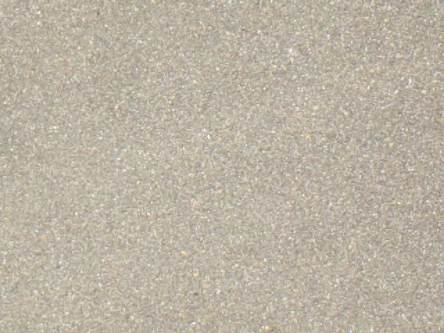 |
None | None |
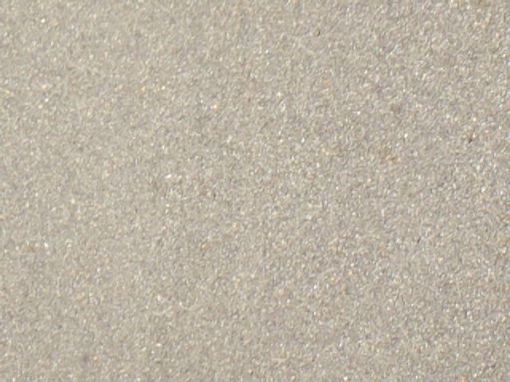 |
None | None |